חיפוש מקומי ואלגוריתמים גנטיים
⏱ זמן משוער: 60 דק'
0. האינטואיציה — כשהמסלול לא מעניין אותנו, רק היעד
עד כה כל אלגוריתם שפגשנו שמר עץ חיפוש שלם וזכר איך הגענו לכל מצב, כי המטרה הייתה למצוא מסלול טוב. אבל בהרבה בעיות אמיתיות — תכנון רצפת מפעל, תכנון מעגלים משולבים, ובעיית ה-8-מלכות הקלאסית — המסלול לא מעניין איש. מה שמעניין הוא רק המצב הסופי: האם הוא עומד בדרישות.
מתי זה שימושי? כאשר מרחב המצבים גדול מכדי לחפש בו שיטתית, כאשר המסלול חסר חשיבות, וכאשר הזיכרון מוגבל. בבעיית n-מלכות למשל: מניחים n מלכות על לוח n×n כך שאף שתיים לא יאיימו זו על זו (לא באותה שורה, עמודה או אלכסון) — וכל מה שמעניין אותנו זה הלוח הסופי, לא הסדר שבו הצבנו את המלכות.
| יתרונות חיפוש מקומי | החיסרון המרכזי |
|---|---|
|
כיוון שהחיפוש מקומי בלבד, האלגוריתם עלול להיתקע בפתרון תת-אופטימלי מבלי לדעת שקיים פתרון טוב יותר — זהו מקסימום/מינימום מקומי, האתגר המרכזי שיחזור בכל האלגוריתמים בפרק. |
בפרק הזה נכיר ארבעה אלגוריתמים, כל אחד עם דרך אחרת להתמודד עם הבעיה הזו: Hill Climbing (חמדני טהור), Simulated Annealing (חמדני עם סבלנות סטטיסטית), Local Beam Search (חמדני מקבילי), ואלגוריתמים גנטיים (חמדני מקבילי עם רבייה).
מקור: 06-local-search.pdf (עמ' 1–6)
1. Hill Climbing — טיפוס גבעה חמדני
התיאור הכי מדויק של Hill Climbing הוא הציטוט מהשקף: "Like climbing Everest in thick fog with amnesia" — מטפסים תמיד למעלה, אבל בלי לראות רחוק ובלי לזכור מאיפה באנו.
האלגוריתם מתחיל ממצב התחלתי כלשהו, ובכל שלב בוחר את השכן בעל הערך הגבוה ביותר. אם אין שכן טוב יותר — עוצר ומחזיר את המצב הנוכחי:
HillClimb(problem):
// returns a state that is a local maximum
current = InitialState(problem)
loop do {
neighbor = highest valued successor of current
if Value(neighbor) ≤ Value(current)
return current // אין שיפור — עצירה
current = neighbor
}
דוגמה מוקדשת: 4-מלכות
פונקציית ההערכה: h = מספר זוגות המלכות התוקפות זו את זו (במישרין או בעקיפין). המטרה: למזער את h עד 0. בכל שלב בוחרים את המהלך שמוריד את h למינימום. שימו לב: בטרייס הבא הערכים מוצגים כשליליים (-6 → -3 → -1 → 0) כי המצגת ממסגרת את הבעיה כמקסימיזציה (למקסם -h).
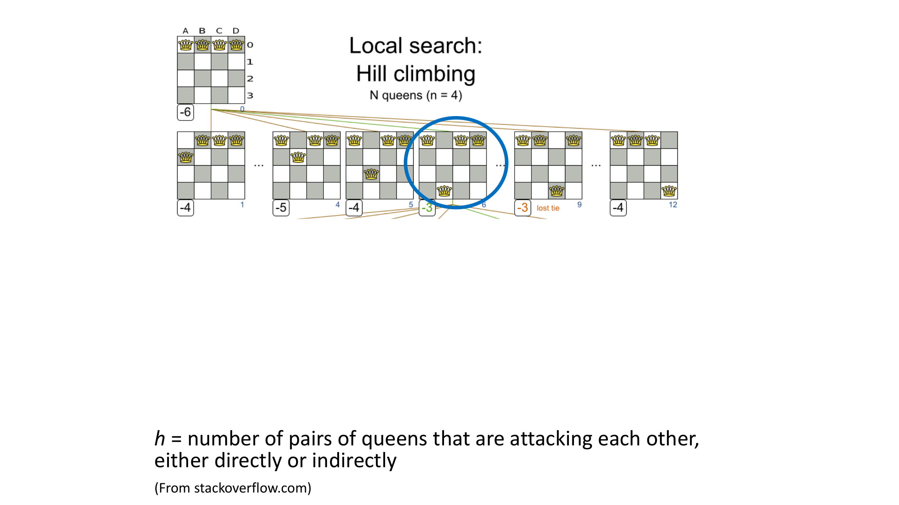
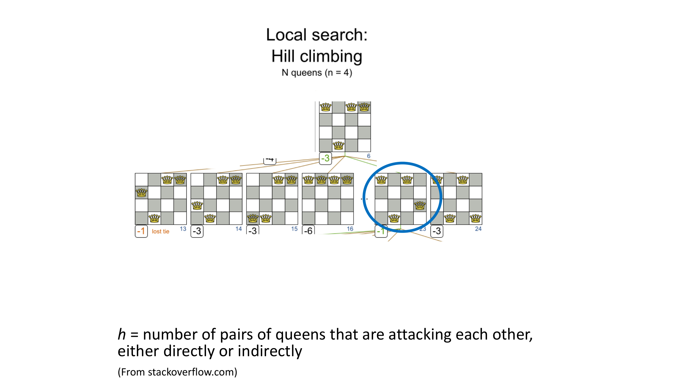
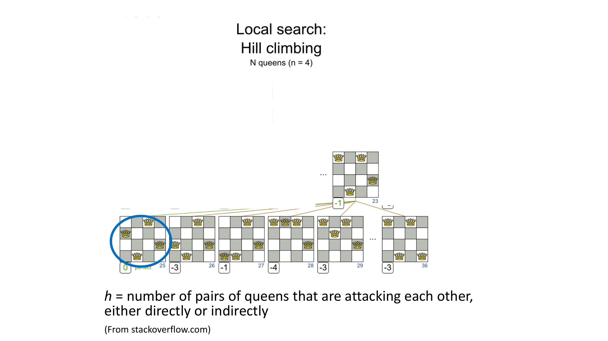
תרגיל כיתה: הרצה על מפת רומניה
הריצו Hill Climbing עם h = מרחק קו-אווירי לבוקרשט, החל מ-Arad:
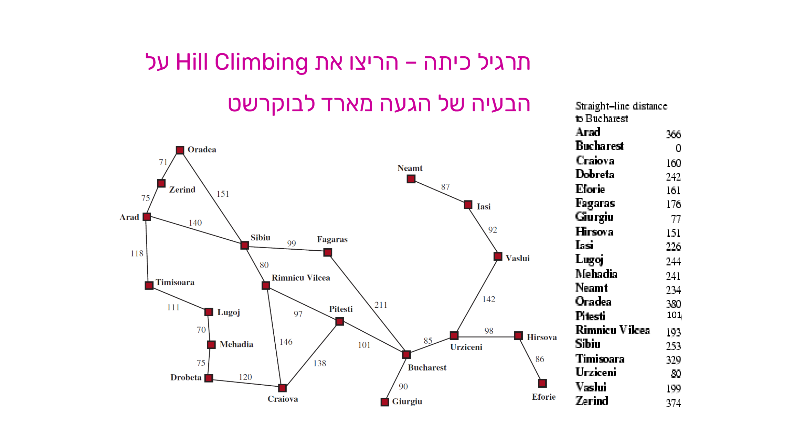
בכל שלב האלגוריתם בוחר את הבן עם ה-h (מרחק אווירי) הנמוך ביותר, בלי להתחשב בעלות המסלול שכבר נצברה:
- Arad (h=366) → בנים: Timi (329), Sibi (253, נבחר), Zeri (374).
- Sibiu → בנים: Rimni (193), Fag (176, נבחר), Ora (380).
- Fagaras → בן: Buch (0, נבחר — המטרה!).
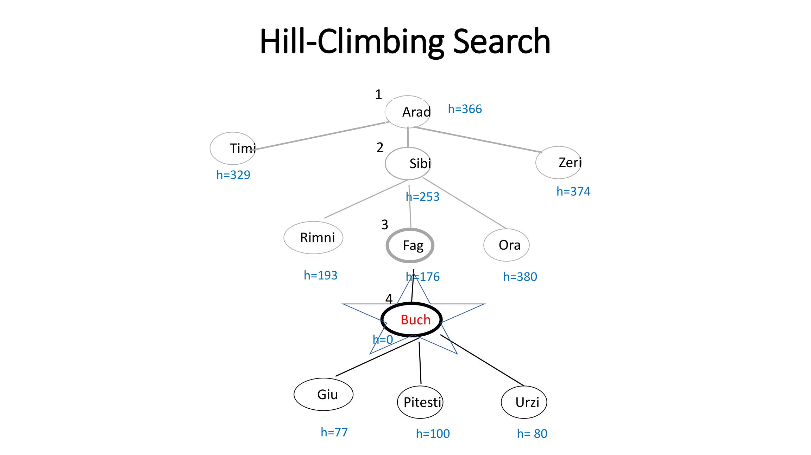
תרגיל כיתה נוסף: פאזל המספרים
אותו רעיון על בעיה אחרת: הריצו Hill Climbing על פאזל המספרים (3×3) כאשר h = מספר האריחים שאינם במקומם, והמטרה היא להגיע ל-h=0.
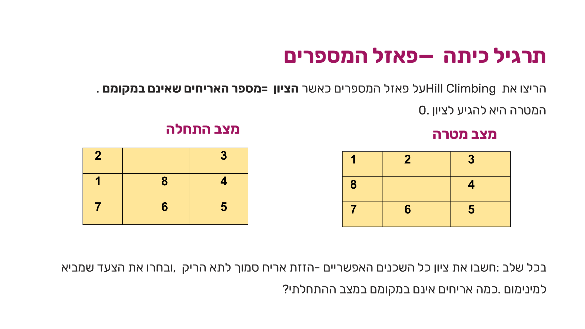
בדקו את עצמכם: כמה אריחים אינם במקומם במצב ההתחלתי? (האריחים 2, 1, 8 אינם במקומם ביחס למצב המטרה שבשקף — כלומר h ההתחלתי הוא 3.)
מתי Hill Climbing נכשל — ותיקון הבאג
על 8-מלכות, Hill Climbing הבסיסי נתקע ב-87% מהמקרים (בממוצע 4 צעדים להצלחה, 3 צעדים לכישלון) — בגלל מקסימום מקומי או כתף (plateau): אזור שטוח שממנו לכאורה אין לאן לעלות.
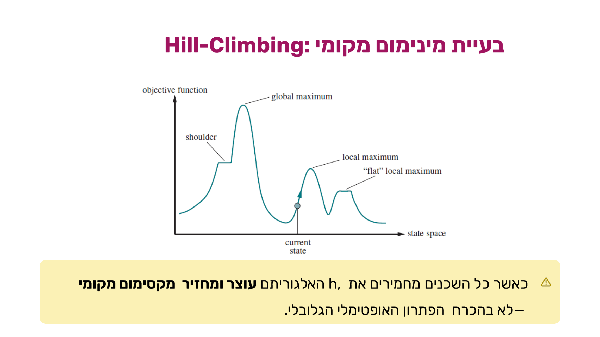
דוגמה קונקרטית לתקיעה: מצב 8-מלכות עם h=1 שבו כל מהלך אפשרי מחמיר את המצב:
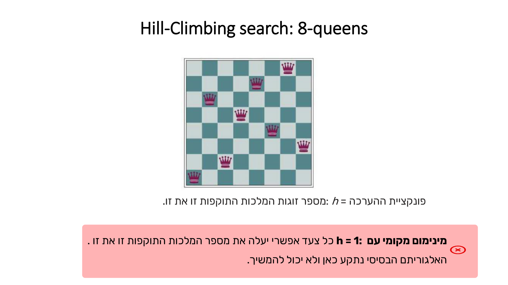
הבאג נמצא בשורת התנאי: if Value(neighbor) ≤ Value(current) — הסימן ≤ אומר שהאלגוריתם עוצר גם על שוויון, בדיוק מה שקורה על כתף. התיקון: להחליף ל-<, ולאפשר sideways moves — מעבר לשכן שווה-ערך (עם הגבלת מספר צעדים כדי למנוע לולאה אינסופית):
HillClimb(problem):
current = InitialState(problem)
loop do {
neighbor = highest valued successor of current
if Value(neighbor) < Value(current)
return current // נעצור רק כשהציון גרוע יותר
current = neighbor
}
| שיעור הצלחה | צעדים להצלחה (ממוצע) | צעדים לכישלון (ממוצע) | |
|---|---|---|---|
| לפני השיפור (עצירה גם על שוויון) | 13% | 4 | 3 |
| אחרי השיפור (sideways moves מותרות) | 94% | 21 | 64 |
שיפור דרמטי בהצלחה — במחיר ריצות ארוכות משמעותית (הן בהצלחה והן בכישלון), כי צעדים צידיים "בוזבזים" בלי להתקדם ממש.
וריאנטים נוספים
- Random Restart Hill Climbing: מריצים Hill Climbing מספר פעמים ממצבים התחלתיים רנדומליים. אם p הוא סיכוי ההצלחה של הרצה בודדת, מספר ההרצות הנדרש בממוצע הוא 1/p. ל-8-מלכות: כ-7 הרצות, כ-22 צעדים בממוצע — שיטה פשוטה אך יעילה מאוד.
- Stochastic Hill Climbing: בוחר רנדומלית בין השכנים המשפרים, לא בהכרח את הטוב ביותר — עלייה פחות תלולה אך מגוונת יותר, ומקטינה סיכוי להיתקע.
מקור: 06-local-search.pdf (עמ' 7–27)
2. Simulated Annealing — טיפוס גבעה עם סבלנות
Simulated Annealing מחקה תהליך מתכות: חישול (annealing) — מחממים מתכת לטמפרטורה גבוהה, משנים את צורתה, ואז מקררים לאט. הטמפרטורה הגבוהה מאפשרת גמישות מבנית; הקירור האיטי מייצב את המבנה האופטימלי.
SimulatedAnnealing(problem, schedule):
current = InitialState(problem)
for t = 1 to infinity do
Temp = schedule(t) // טמפרטורה יורדת עם הזמן
if Temp = 0 then return current
next = random successor of current
ΔE = Value(next) - Value(current)
if ΔE > 0 // שכן טוב יותר — תמיד נקבל
current = next
else // שכן גרוע יותר — נקבל בהסתברות
current = next with probability e^(ΔE/Temp)
שלושה עקרונות מפתח: (1) שכן טוב תמיד מתקבל. (2) שכן גרוע מתקבל לפעמים, בהסתברות שקטנה בהדרגה. (3) קצב הורדת הטמפרטורה (Cooling Schedule) קובע את איכות הפתרון: קירור מהיר מדי → פתרון גרוע; קירור איטי → ביצועים טובים יותר (אך יקר בזמן).
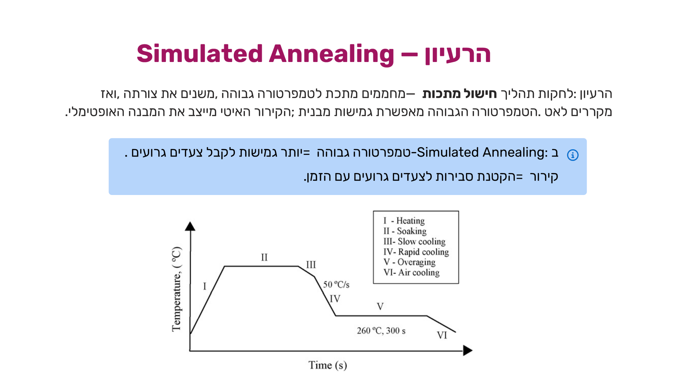
יישומים מהעולם האמיתי: קביעת לוחות זמנים של טיסות, VLSI layout (תכנון מעגלים משולבים), אופטימיזציה של רשתות תקשורת, ובעיית הסוכן הנוסע (TSP) — אחת הבעיות הקשות ביותר באופטימיזציה, שעליה Simulated Annealing מניב תוצאות מרשימות (בדיוק מה שראיתם בסרטון למעלה).
מקור: 06-local-search.pdf (עמ' 28–35)
3. Local Beam Search — טיפוס גבעה במקביל
Local Beam Search שומר k מצבים במקום מצב אחד בכל שלב:
- אתחול: מתחיל מ-k מצבים שנוצרו באופן רנדומלי.
- הרחבה: מייצרים את כל העוקבים של כל k המצבים.
- בחירה: בוחרים את k הצאצאים הטובים ביותר מכלל הצאצאים שנוצרו (לא k הטובים מכל הורה בנפרד!).
- עצירה: אם לא ניתן לשפר ציון — עוצרים; אחרת חוזרים לשלב ההרחבה.
תרגיל כיתה: k=2 על מפת רומניה
אותה מפה וטבלת h מהתרגיל של Hill Climbing, אך הפעם עם שני מצבים פעילים בו-זמנית:
- מצב פתיחה: Arad (h=366) → בנים Timi (329), Sibi (253), Zeri (374).
- שלב 1 — נבחרים שני הטובים ביותר: Timi (329) ו-Sibi (253). הרחבה: Timi→Lugo (244); Sibi→Rimni (193), Fag (176), Ora (380).
- שלב 2 — מכלל הצאצאים (Lugo 244, Rimni 193, Fag 176, Ora 380) נבחרים Rimni (193) ו-Fag (176). הרחבה: Rimni→Cra (160), Pitesti (101); Fag→Buch (0).
- שלב 3 — מכלל הצאצאים (Cra 160, Pitesti 101, Buch 0) נבחרים Pitesti (101) ו-Buch (0) — Buch הוא המטרה, החיפוש מסתיים.
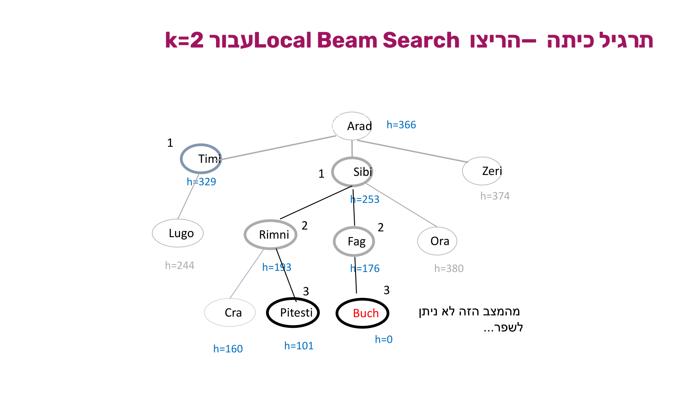
ההבדל מ-Random Restart
ב-Random Restart כל הרצה עצמאית לחלוטין. ב-Local Beam Search — מידע חשוב נשמר ומשותף לאורך כל k החיפושים המקבילים (מצב טוב "מושך" אליו את שאר הקרן), מה שמאפשר התכנסות מהירה יותר — אך גם סכנת איבוד גיוון. הפתרון: הגרסה הסטוכסטית, שבוחרת k צאצאים רנדומלית לפי ערכם (הסתברות בחירה עולה עם הערך) — מונעת התכנסות לאזור קטן אחד.
| k | שם | תיאור |
|---|---|---|
| k=1 | Hill Climbing | מסלול יחיד, מהיר אך נתקע בקלות באופטימום מקומי. |
| k>1 | Beam Search | k מסלולים מקבילים, סיכון נמוך יותר לאופטימום מקומי, זיכרון גבוה יותר. |
| k=∞ | Full Best-First | כל המצבים נחקרים, אופטימלי אך דורש זיכרון אקספוננציאלי. |
מקור: 06-local-search.pdf (עמ' 36–44)
4. אלגוריתמים גנטיים — Beam Search עם רבייה
אלגוריתם גנטי מדמה אבולוציה ביולוגית: כמו ב-Beam Search שומרים אוכלוסייה של k מצבים, אבל מצב-צאצא נוצר על ידי שילוב שני מצבי-הורים — לא רק על ידי מעבר לשכן.
- ייצוג (Encoding): כל מצב = מחרוזת מעל אלפבית סופי (בד"כ מחרוזת ספרות/סיביות), כמו כרומוזום.
- אוכלוסייה (Population): מתחיל מ-k מצבים רנדומליים — "דור ראשון".
- פונקציית כושר (Fitness): מעריכה כל מצב — ערך גבוה יותר = פתרון טוב יותר. מקבילה לפונקציית ההערכה בחיפוש.
יצירת צאצא מתבצעת בשלושה שלבים:
- בחירת הורים (Selection): נבחרים רנדומלית שני הורים, בהסתברות פרופורציונלית לכושר שלהם — הורה עם כושר גבוה נבחר בסבירות גבוהה יותר.
- הכלאה (Crossover): לכל זוג נבחרת רנדומלית נקודת חציה. הצאצא = החלק השמאלי של הורה אחד + החלק הימני של ההורה השני.
- מוטציה (Mutation): בהחלטה רנדומלית, ספרה אחת בצאצא עשויה להשתנות — מונעת קיבעון מקומי ושומרת גיוון גנטי.
דוגמה: הכלאת שני לוחות 8-מלכות
כל ספרה במחרוזת = שורת המלכה בעמודה המתאימה. הורה 1: 32752411 (חציה אחרי 3 ספרות: 327 | 52411); הורה 2: 24748552 (חציה זהה: 247 | 48552). הצאצא לוקח את החלק השמאלי מהורה 1 ואת החלק הימני מהורה 2:
327|52411 (parent 1) 247|48552 (parent 2) ────────── 327 48552 → child = 32748552
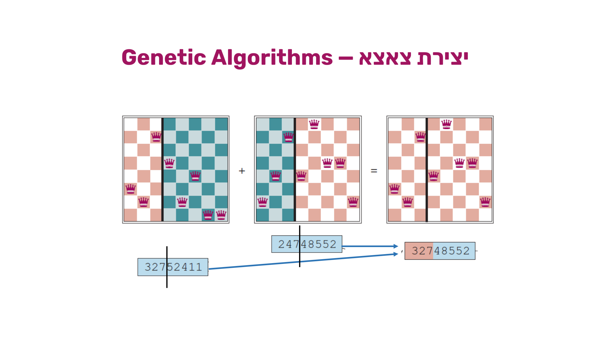
דור שלם: אוכלוסייה → בחירה → הכלאה → מוטציה
פונקציית הכושר בדוגמה: מספר זוגות המלכות שאינן תוקפות (מקסימום 8×7/2 = 28). אוכלוסיית הפתיחה:
| מחרוזת | fitness | הסתברות בחירה |
|---|---|---|
| 24748552 | 24 | 31% |
| 32752411 | 23 | 29% |
| 24415124 | 20 | 26% |
| 32543213 | 11 | 14% |
ההסתברות מחושבת יחסית לסך הכושר: 24/(24+23+20+11) = 31%, 23/78 = 29% וכן הלאה. שימו לב: 32543213 (הכי חלש) לא נבחר כלל, ואילו 32752411 נבחר פעמיים — בחירה עם החזרה, פרופורציונלית לכושר.
הכלאה: 327|52411 + 247|48552 → 32748552 ו-24752411; 32752|411 + 24415|124 → 32752124 ו-24415411. מוטציה (ספרות בודדות משתנות): 32748552 → 32748152, 32752124 → 32252124, 24415411 → 24415417.
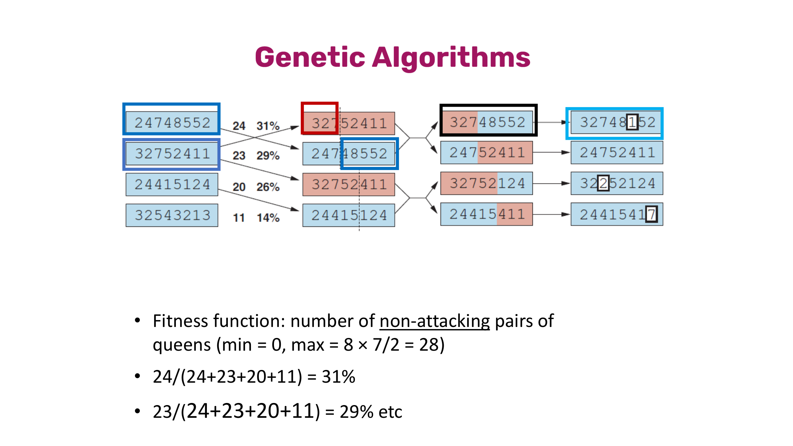
הפסאודו-קוד (AIMA Figure 4.7)
function GENETIC-ALGORITHM(population, fitness) returns an individual
repeat
weights ← WEIGHTED-BY(population, fitness)
population2 ← empty list
for i = 1 to SIZE(population) do
parent1, parent2 ← WEIGHTED-RANDOM-CHOICES(population, weights, 2)
child ← REPRODUCE(parent1, parent2)
if (small random probability) then child ← MUTATE(child)
add child to population2
population ← population2
until some individual is fit enough, or enough time has elapsed
return the best individual in population, according to fitness
function REPRODUCE(parent1, parent2) returns an individual
n ← LENGTH(parent1)
c ← random number from 1 to n
return APPEND(SUBSTRING(parent1, 1, c), SUBSTRING(parent2, c + 1, n))
מקור: 06-local-search.pdf (עמ' 45–52)
5. השוואה — Hill Climbing מול Min-Conflicts
Min-Conflicts הוא חיפוש מקומי המיועד ספציפית לבעיות CSP: מתחיל מהשמה מלאה רנדומלית (לא ריקה!) ובכל צעד בוחר משתנה שמפר אילוץ ומחליף את ערכו לערך שממזער את מספר ההפרות. הוא מקרה פרטי של Hill Climbing — אותו רעיון של שיפור איטרטיבי — אבל עם פונקציית מטרה ותנאי עצירה ממוקדים בהרבה. (ההשוואה הזו מופיעה שוב במודול הבא, על עקביות קשתות.)
| היבט | Min-Conflicts | Hill Climbing (כללי) |
|---|---|---|
| סוג חיפוש | שניהם חיפוש מקומי (iterative improvement) העלול להיתקע באופטימום מקומי. | |
| מה משנים בכל צעד | שניהם משנים ערך של משתנה בודד אחד בכל איטרציה — לא את כל הפתרון בבת אחת. | |
| פונקציית המטרה | ממזער במפורש את מספר האילוצים המופרים (constraint violations). | ממזער/ממקסם פונקציית הערכה כללית כלשהי — לא בהכרח ספירת אילוצים. |
| סיכון עיקרי | עלול לרוץ ללא סוף (loop) אם ממשיך לבחור משתנים מתנגשים בלי שיפור אמיתי. | עלול "להיתקע" ב-current כשאין שכן טוב יותר (plateau / מקסימום מקומי). |
| תנאי עצירה | 0 = אין אף אילוץ מופר — תנאי אובייקטיבי ומדיד: פתרון חוקי נמצא בוודאות. | מגיעים לשיא ביחס ל-current — תנאי יחסי: אין שכן טוב יותר, לאו דווקא אפס הפרות/פתרון גלובלי. |
מקור: comparison-hillclimbing-minconflicts.pdf
6. מלכודות למבחן — סיכום
- Hill Climbing לא תמיד מוצא פתרון, גם אם קיים — הבסיסי נכשל ב-87% מהמקרים על 8-מלכות. אל תניחו ש"אלגוריתם חמדני שרץ מספיק זמן" יגיע ליעד.
- הצלחה של Hill Climbing ≠ אופטימליות — במסלול Arad→Sibiu→Fagaras→Bucharest הוא מוצא מטרה, אך לא את המסלול הזול ביותר (דרך Rimnicu-Pitesti זולה יותר).
- k=1 → Hill Climbing; k>1 → Beam Search; k=∞ → Full Best-First — שאלה חוזרת. הגדלת k מחליפה זיכרון בעמידות מול אופטימום מקומי.
- Beam Search הוא חיפוש מקומי, לא חיפוש מבוסס-עץ — הוא שומר רק k מצבים בכל רגע נתון, ולא את עץ החיפוש כולו.
- באלגוריתם הגנטי ההורים לא נשמרים — האוכלוסייה החדשה היא הצאצאים בלבד, לא שילוב של הורים וצאצאים.
- Simulated Annealing מקבל גם מהלכים גרועים — זה בדיוק היתרון שלו על פני Hill Climbing רגיל: ירידה זמנית בציון עשויה לאפשר בריחה ממקסימום מקומי ועלייה גדולה יותר בהמשך.
- Min-Conflicts מתחיל מהשמה מלאה רנדומלית, לא מהשמה ריקה כמו Backtracking — זו נקודת ההבדל הבסיסית ביותר בין חיפוש מקומי ל-CSP לבין חיפוש שיטתי.
7. תרגיל הבית — תרגיל 4
הורדות: שאלת התרגיל (ex04.pdf) · הפתרון המלא (sol04.pdf).
שאלה 1 — פקמן כבעיית חיפוש מיודע
במשחק הפקמן החדש ישנו פקמן הנמצא במבוך בגודל 10X10 משבצות, המכיל קירות חוסמים אך ללא אויבים וסכנות וללא נקודות על מאכלים. בתחילת המשחק, הפקמן נמצא במקום רנדומאלי על הלוח. הפקמן צריך להגיע למשבצת [5,6]. בכל שלב הפעולות האפשריות לפקמן הן ללכת צעד אחד לכיוון North, South, East, West, Stop. בהנחה שאין קיר חוסם בכיוון זה.
עלינו למצוא תוכנית עבודה בה יגיע הפקמן ליעד במספר הצעדים הנמוך ביותר.
א. [20 נקודות] ייצגו את הבעיה כבעיית חיפוש באופן פורמאלי תוך התייחסות ל: מהי הגדרת מצב כללי, מהי פונקציית העוקב, מהו מבחן המטרה, מהי עלות צעד.
ב. [10 נקודות] הציעו פונקציה היוריסטית המעריכה את מספר הצעדים עד למצב הפתרון ממצב כלשהו במשחק.
ג. [10] האם הפונקציה שהצעת היא קבילה? (אופטימית) נמקו בקצרה.
ד. [10 נקודות] האם הפונקציה שהצעת היא מונוטונית? נמקו בקצרה.
א. ייצוג פורמלי:
מצב כללי הינו מטריצה 10 על 10 המתארת את מיקום הלוחות ומיקום הפקמן שייצוג ע"י נקודה, [x,y].
פונקציית העוקב, היא הפעלת כל אחת מהפעולות האפשריות על פקמן, בהנחה שאין קיר חוסם באותה משבצת:
S([x,y]) = [a,b], where:
1. [a,b] in { [x,y],
[x,y+1] if y<10,
[x, y-1] if y>1,
[x+1,y] if x<10,
[x-1, y] if x>1 } and there is no wall between [x,y] and [a,b].
מבחן המטרה: הפקמן הגיע ליעד כלומר x=5 and y=6.
עלות כל צעד — 1 — עלות שווה לכל תזוזה.
ב. היוריסטיקה: אם נגדיר את הבעיה עם הקלה — שאין קירות בתוך הלוח, הרי שהמרחק שיצטרך הפקמן לעבור יהיה מרחק מנהטן בין מיקומו לבין [5,6]:
h(x,y) = |x-5| + |y-6|
ג. קבילות: הפונקציה קבילה כיוון שאם אין קירות במסלול, זה בדיוק מספר הצעדים שיבוצעו, כיוון שזה המרחק הקצר ביותר כשלא ניתן ללכת באלכסון. אם יש קירות בדרך צריך לעקוף אותם, ולכן ללכת מספר צעדים גדול יותר.
ד. מונוטוניות: פונקציה עקבית (consistent) גוררת שציון f של מצב יהיה קטן או שווה לציון של בנו. אם מתקדמים צעד לקראת היעד — עלות הצעד אחד ומרחק המנהטן מתקצר באחד, כלומר f של מצב ההורה ו-f של מצב הילד זהה. אם המצב הבא מתרחק מהיעד, בשל קיר, אזי מרחק המנהטן של המצב החדש גדל וגם נוסף ל-g של המצב החדש צעד נוסף של עלות הצעד, כך שה-f של הילד גדול יותר מה-f של ההורה. לכן ה-f של הילד גדול או שווה ל-f של ההורה, והפונקציה שהגדרנו היא עקבית.
שאלה 2 — עץ Hill Climbing על ה-8-puzzle
[50 נקודות] נתון מצב התחלתי של 8-puzzle:2 _ 3 1 8 4 7 6 5נרצה לפתור את הבעיה על ידי שימוש ב-hill climbing כאשר הציון של קודקוד הוא מספר האריחים שאינם במקומם במצב המטרה שהוא:2 8 3 1 4 5 7 _ 6הראו את עץ הפיתוח שמייצר האלגוריתם (למרות שלא שומר את העץ). חובה למספר את הקודקודים שיפתחו לפי סדר הפיתוח וחובה לכתוב את החישובים הנעשים לכל קודקוד. חובה לצייר המצבים בצורת מטריצות, כפי שמופיעים בשאלה.
קודקוד 1 (שורש) — h=4 (האריחים שלא במקומם: 8, 4, 5, 6):
2 _ 3 1 8 4 7 6 5
שלושה ילדים (הזזת החור): שמאלי h=5, אמצעי h=5, ימני h=3 — נבחר (קודקוד 2): 8 נכנס למקומו.
2 8 3 1 _ 4 7 6 5
קודקוד 2 (h=3) — שלושה ילדים: h=3, h=2 (נבחר, קודקוד 3: 4 נכנס למקומו), h=4.
2 8 3 1 4 _ 7 6 5
קודקוד 3 (h=2) — שני ילדים: h=3, h=1 (נבחר, קודקוד 4: 5 נכנס למקומו).
2 8 3 1 4 5 7 6 _
קודקוד 4 (h=1) — ילד יחיד (קודקוד 5) — h=0, מצב המטרה!
2 8 3 1 4 5 7 _ 6
מקודקוד 5 בודקים את שני ילדיו (h=1, h=1) — אף אחד אינו משפר את הציון, ולכן קודקוד 5 מוחזר כפתרון.
שאלות "לא להגשה" — נכון/לא נכון:
א. המצב ההתחלתי משפיע על האופטימליות של Hill Climbing? נכון. יש מצבים שהפעלת אלגוריתם חמדני מגיעה למקסימום גלובלי ויש מצבים שמובילה למקסימום מקומי — לכן יש השפעה של המצב ההתחלתי על ההצלחה להגיע לפתרון אופטימלי.
ב. אם h תמיד גדולה מ-h' (שתיהן קבילות), h תאפשר ל-A* לפתח פחות קודקודים? נכון. ככל שהפונקציה ההיוריסטית מחזירה ערך קרוב יותר (אך עדיין קטן/שווה) למרחק האמיתי, כך יפתח A* פחות קודקודים. (אם אינן קבילות, אין עדיפות ואין הבטחת אופטימליות.)
ג. IDA* צריך זמן עבודה כמו A*, בדומה לכך ש-ID צריך זמן עבודה כמו BFS? לא נכון. IDA* עלול לפתח באופן חוזר קודקודים רבים אם יש ערכים שונים לכל הקודקודים, ולכן עלול לעבוד זמן רב יותר מ-A*. זה שונה מ-ID, שמפתח שוב רק מספר קטן של קודקודים (רמות עליונות), ולכן זמן העבודה שלו נשלט ע"י פיתוח רמת הפתרון פעם אחת.
ד. A* תמיד עדיף על חיפוש מקומי? לא נכון. אם לא צריך מסלול לפתרון, חיפוש מקומי יכול למצוא פתרון כש-A* יקח הרבה יותר זמן. אם יש צורך במסלול, A* עדיף — הוא מתחייב לעלות אופטימלית וחיפוש מקומי לא, אך לרוב מוצא פתרון אופטימלי גם הוא לאחר מספר הרצות.
ה. טיפוס גבעה מתאים לכל בעיות החיפוש? לא נכון. חיפוש גבעה הוא חיפוש מקומי שאינו מחזיר מסלול אל הפתרון, ולכן לא מתאים לבעיות שדורשות מסלול.
מקור: ex04.pdf (עמ' 1–2), sol04.pdf (עמ' 1–3)
8. בדיקה עצמית
מה בדיוק הבאג בגרסה הבסיסית של Hill Climbing שגורם לו לעצור על "כתף" (plateau)?
ב-Random Restart Hill Climbing, אם סיכוי ההצלחה של הרצה בודדת הוא p, כמה הרצות נדרשות בממוצע כדי להצליח?
ב-Simulated Annealing, מתי ההסתברות e^(ΔE/Temp) לקבל מהלך גרוע היא הגבוהה ביותר?
מה ההבדל המרכזי בין Local Beam Search (k>1) לבין Random Restart Hill Climbing עם k הרצות מקבילות?
באלגוריתם הגנטי, איך נבחרים שני ההורים ליצירת כל צאצא?
מה ההבדל המרכזי בין תנאי העצירה של Min-Conflicts לבין תנאי העצירה של Hill Climbing הכללי?
בתרגיל הכיתה על מפת רומניה, Hill Climbing עם h=מרחק אווירי מגיע ל-Bucharest דרך Arad→Sibiu→Fagaras→Bucharest. מדוע זה אינו סימן שהאלגוריתם מצא את המסלול הזול ביותר?
בלולאת האלגוריתם הגנטי (population ← population2 בכל איטרציה), מה קורה להורים של הדור הנוכחי?
סיימתם את הפרק? סמנו אותו כהושלם: